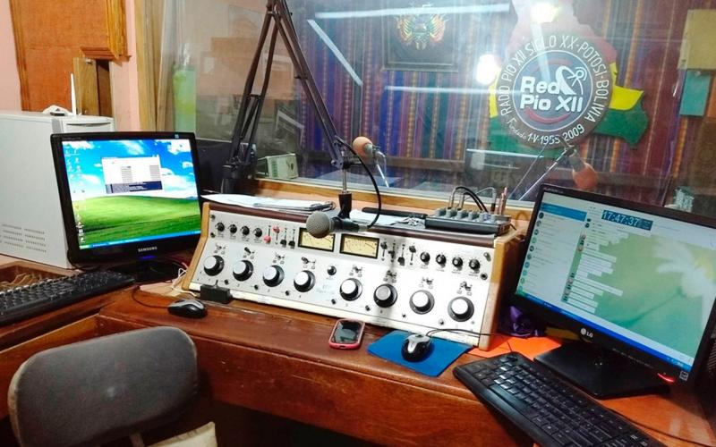
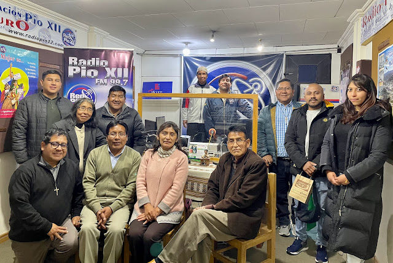
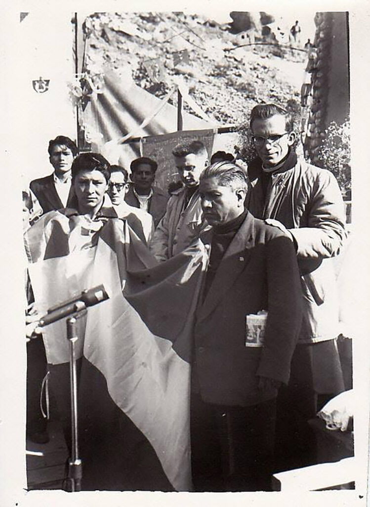
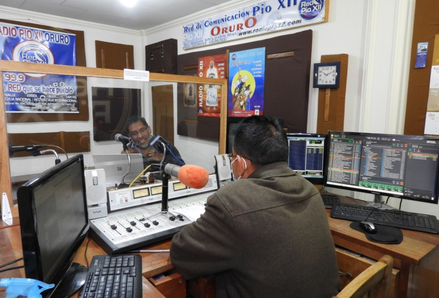
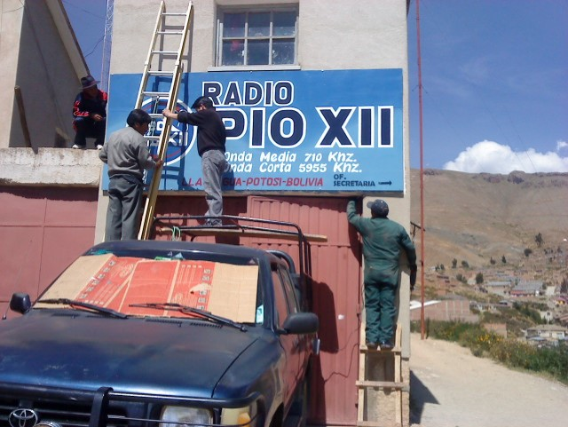

Fototeca Histórica





Audioteca
Programa especial - Aniversario 6°
1965 | Celebración del 6° aniversario
Noticiero minero
1978 | Cobertura de la huelga general
Entrevista a líder sindical
1982 | Durante el proceso de democratización
Documentos Históricos
Videoteca
Documental "La Voz del Pueblo"
1987 | Producción independiente sobre la radio
28:15 minEntrevista a fundadores
1998 | 40° aniversario de la radio
15:45 minRestauración de archivos
2015 | Proyecto de preservación
12:30 min